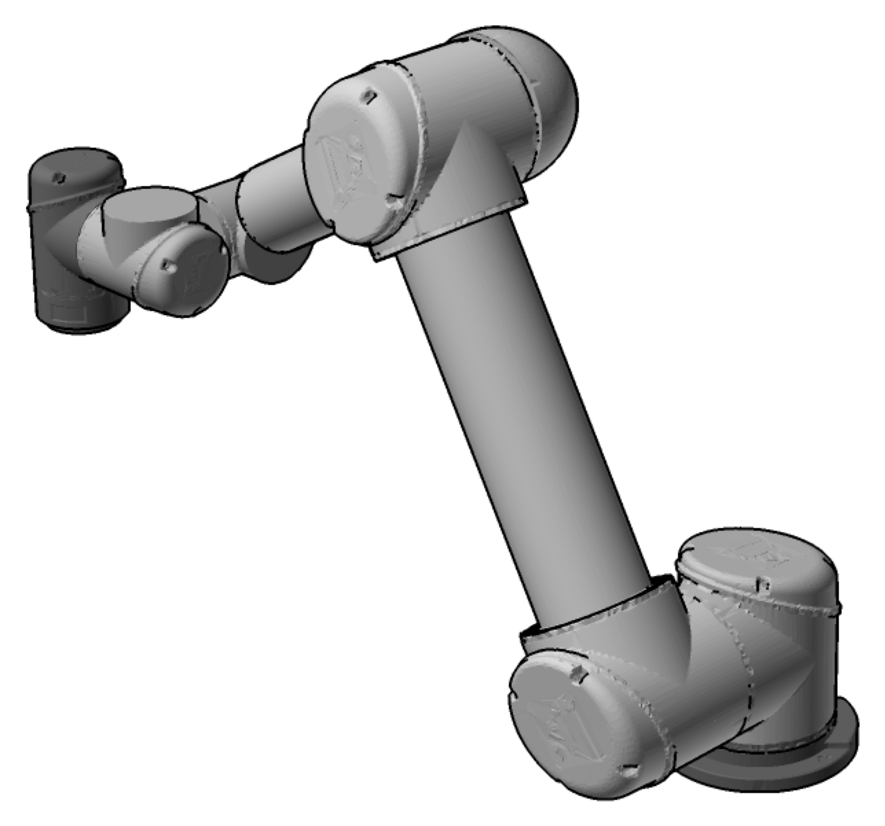
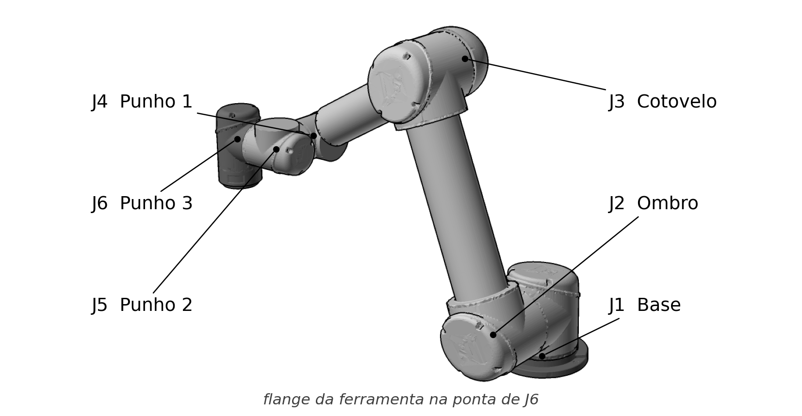
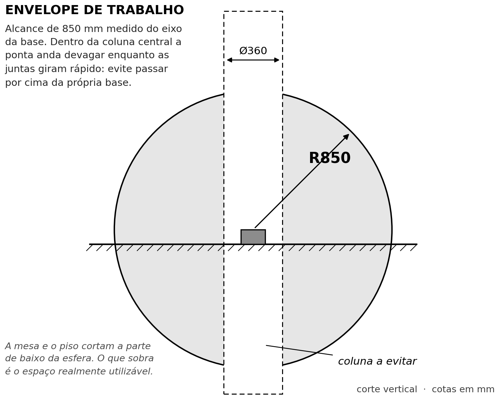
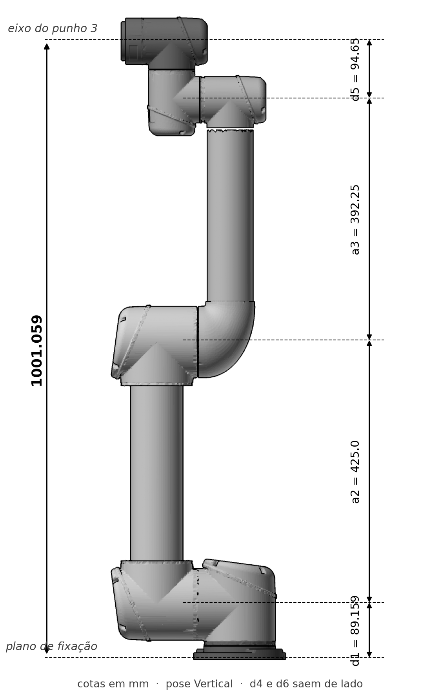
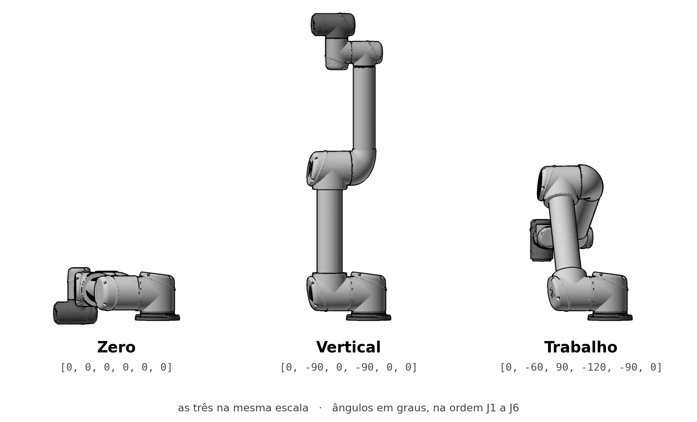
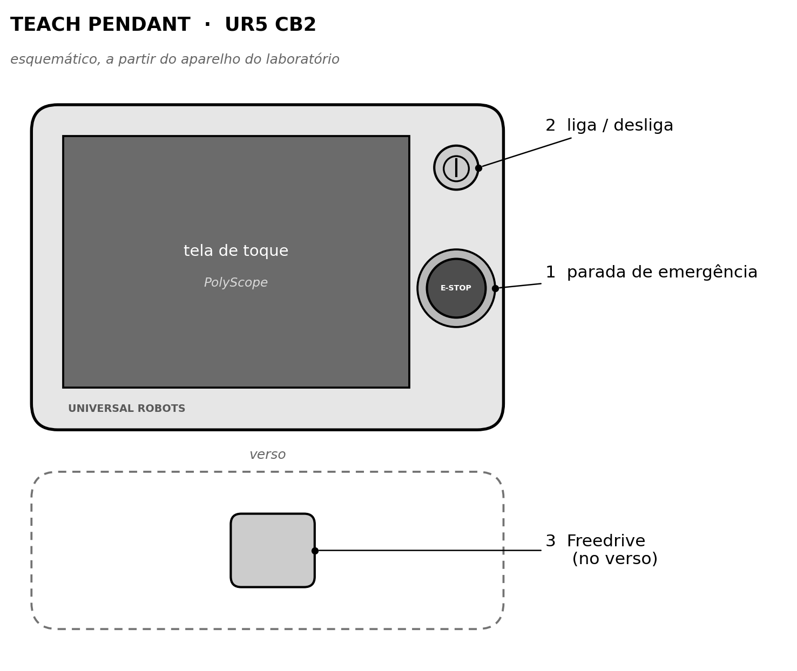
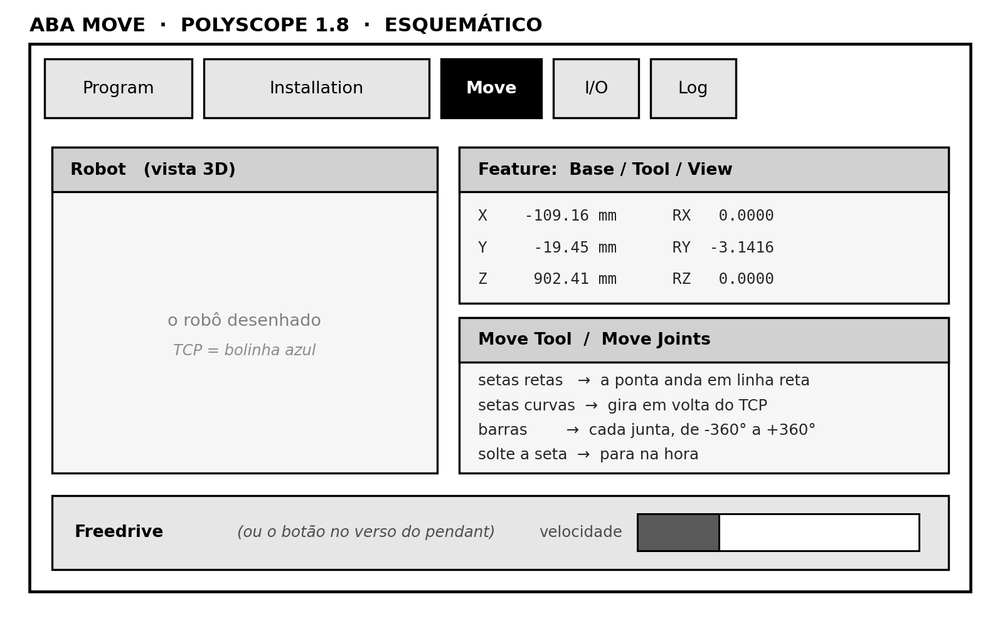

| Equipamento | UR5, Universal Robots |
| Controlador | CB2, PolyScope / URControl 1.8.25319 |
| Aplicação | ensino e pesquisa em célula de laboratório |
| Perfil do leitor | operador sem experiência prévia com robôs industriais |
| Documento | edição 1, revisão A |
Este manual cobre as duas maneiras de operar o robô. A primeira é o teach pendant, que é a operação oficial e a única que existe quando não há computador por perto. A segunda é a tela do projeto cobot_testing_ur5_app, que roda no navegador e serve tanto para treinar em simulação quanto para acompanhar ou comandar o robô real.
As figuras do robô não são fotografias nem desenhos feitos à parte. Elas são geradas a partir do mesmo modelo de CAD e da mesma cadeia cinemática que o gêmeo digital do projeto usa, o que garante que a pose, as proporções e as cotas impressas aqui concordam com o que a tela mostra.
UR5, PolyScope e Universal Robots são marcas da Universal Robots A/S. Documento independente, não produzido nem endossado pela Universal Robots A/S, e que não substitui a documentação oficial do fabricante. Detalhe na página 17.
O manual é uma coleção de documentos curtos, cada um com o próprio código no rodapé e a própria numeração de páginas. Quem precisa só de uma parte arranca ou imprime só aquela parte, sem carregar o resto.
| UR5_CB2_TD_0100 | Ficha técnica: o robô, as juntas e o espaço de trabalho | 3 |
| Descrição, características e identificação das juntas | 3 | |
| Especificações e envelope de trabalho | 4 | |
| Cadeia cinemática e singularidade | 5 | |
| Poses de referência e leitura da posição | 6 | |
| UR5_CB2_AN_0200 | Nota de aplicação: segurança e estados do robô | 7 |
| As seis regras e os três tipos de parada | 7 | |
| Modos do robô e o que cada um exige | 8 | |
| UR5_CB2_OP_0300 | Operação pelo teach pendant | 9 |
| O pendant e o procedimento de partida | 9 | |
| Inicialização das juntas e tela inicial | 10 | |
| A aba Move | 11 | |
| AutoMove, Freedrive, programas e desligamento | 12 | |
| UR5_CB2_OP_0400 | Operação pela tela do navegador | 13 |
| A tela, o jog e os referenciais | 13 | |
| Indicador de conexão e modos do servidor | 14 | |
| UR5_CB2_RR_0500 | Referência rápida | 15 |
| Equivalência entre os dois controles e diagnóstico | 15 | |
| Glossário e sobre as figuras | 16 | |
| Referências, marcas e créditos | 17 |
Caixa com moldura grossa. Marca a informação cuja falta machuca alguém ou danifica o robô. São poucas, e todas foram colocadas onde o erro é comum, não onde é teoricamente possível.
Caixa com moldura fina. Marca a informação que evita perder tempo, tipicamente um comportamento do CB2 que surpreende quem veio de outra geração de controlador.
Texto em monoespaçado é literal: nome de
botão que aparece na tela, comando digitado, endereço. Nome de botão do
PolyScope fica no inglês original, porque é assim que está no
equipamento.
NOTA: as telas descritas neste manual são as do PolyScope 1.8 em controlador CB2. Nas gerações seguintes, CB3 e série e, vários botões mudaram de nome ou deixaram de existir. Instrução escrita para CB3 não se aplica a este robô.
O UR5 é um braço de seis juntas rotativas em tubo de alumínio, com alcance de 850 mm e carga útil de 5 kg. Não há trilho, pistão nem eixo linear: todo movimento vem de girar seis motores de forma coordenada, e é a coordenação entre eles que leva a ferramenta ao ponto desejado.
É classificado como robô colaborativo porque o controlador monitora o torque de cada junta e gera uma parada de proteção quando encontra resistência. Isso permite operar sem grade em volta, desde que a avaliação de risco da célula conclua que a instalação inteira é segura, incluindo a ferramenta montada na ponta.
A unidade deste laboratório usa o controlador CB2, a primeira geração da linha, com PolyScope 1.8.25319.
NOTA: a carga de 5 kg
inclui o peso da garra, não só o da peça. Uma garra pneumática de
1,8 kg deixa 3,2 kg para a peça, e esse é o número que entra na
configuração de Installation.

| Junta | No pendant | Nesta tela | Movimento que produz |
|---|---|---|---|
| J1 | Base | Base | gira o braço inteiro em volta do pedestal |
| J2 | Shoulder | Ombro | levanta e abaixa o braço todo |
| J3 | Elbow | Cotovelo | dobra o braço no meio |
| J4 | Wrist 1 | Punho 1 | inclina o punho |
| J5 | Wrist 2 | Punho 2 | gira o punho de lado |
| J6 | Wrist 3 | Punho 3 | gira a flange onde a ferramenta é aparafusada |
Cada junta percorre uma volta inteira para cada lado a
partir do zero. Ao chegar no limite ela para de girar naquele sentido, e
a única saída é voltar. A aba Move do pendant mostra o
curso de cada junta como uma barra horizontal, e é ali que se vê de
relance qual delas está no fim.
| Desempenho | |
|---|---|
| Carga útil | 5 kg |
| Alcance | 850 mm |
| Repetibilidade | ±0,1 mm |
| Graus de liberdade | 6 |
| Curso por junta | ±360° |
| Velocidade de junta | 180°/s |
| Velocidade da ponta | 1 m/s |
| Físico | |
| Peso do braço, com cabo | 18,4 kg |
| Diâmetro da base | Ø149 mm |
| Fixação | 4 × M8 |
| Rosca do conector de ferramenta | M8 |
| Cabo do braço | 6 m |
| Material | alumínio e PP |
| Ambiente e energia | |
|---|---|
| Grau de proteção, braço | IP54 |
| Grau de proteção, caixa e pendant | IP20 |
| Temperatura de trabalho | 0 a 50 °C |
| Consumo, mínimo e típico | 90 e 150 W |
| Consumo, pico | 325 W |
| Ruído | < 65 dB(A) |
| Entradas e saídas | |
| Na ferramenta, digitais | 2 in / 2 out |
| Na ferramenta, analógicas | 2 in |
| Alimentação na ferramenta | 12 ou 24 V, 600 mA |
| Na caixa, digitais | 16 in / 16 out |
| Na caixa, analógicas | 2 in / 2 out |
| Rede | Ethernet 100 Mbit |
NOTA: valores da folha de dados do fabricante para o braço UR5 [2]. Os limites de junta, o alcance e as velocidades máximas são os mesmos que o software deste projeto usa para validar movimento antes de enviar ao controlador [4].

A região a evitar não é uma proibição do controlador, e sim uma consequência do formato do braço. Perto do eixo da base, uma variação pequena da posição da ferramenta exige uma rotação grande da junta J1. O robô fica rápido e nervoso enquanto a ponta quase não sai do lugar, e o resultado é um movimento que assusta e que desgasta a junta à toa. Em operação normal, não faça a ferramenta passar por cima da própria base.

Seis medidas descrevem a geometria inteira. São elas que convertem ângulo de junta em posição da ferramenta.
| Cota | mm | Entre |
|---|---|---|
| d1 | 89,159 | base e ombro |
| a2 | 425,00 | ombro e cotovelo |
| a3 | 392,25 | cotovelo e punho 1 |
| d4 | 109,15 | desvio lateral |
| d5 | 94,65 | punho 1 e punho 3 |
| d6 | 82,30 | punho 3 e flange |
O d4 e o d6 saem de lado, perpendiculares ao plano da Figura 3, e por isso não aparecem como cota vertical ali. São eles que tiram a ferramenta de cima do eixo do antebraço, o que é o que dá ao punho liberdade de apontar em qualquer direção.
Existem posturas em que o braço perde a capacidade de se mover em alguma direção. A mais fácil de encontrar é a pose Vertical, com o cotovelo esticado e o punho alinhado.
Pedir movimento ao longo do próprio braço, ali, exigiria velocidade infinita em alguma junta, e tanto o controlador quanto o software deste projeto recusam.
Não é defeito nem travamento, é geometria, e a saída é sempre a mesma: dobre o cotovelo.
Essa é a razão de a tela do projeto nascer na pose
Trabalho, e não na Vertical: quem abre a tela e aperta a seta de
Z numa singularidade conclui que o programa quebrou.
O braço é fixado por quatro parafusos M8 nos quatro furos de 8,5 mm da base. Há ainda dois furos de Ø8 para pinos de guia, que existem para quando o robô precisa ser removido e recolocado exatamente na mesma posição, sem reensinar as posições do programa.
A ferramenta é aparafusada na flange, na ponta do punho 3, que tem quatro furos e o conector M8 das ligações elétricas. A superfície de fixação precisa ser firme: base flexível vira vibração, e vibração aparece como perda de repetibilidade.
A orientação de montagem precisa ser informada em
Installation → Mounting. Ela serve a
dois propósitos: fazer o robô aparecer na posição certa no desenho da
tela e, muito mais importante, informar ao controlador a direção da
gravidade. Com a direção errada, a compensação de peso fica errada, e
o sintoma aparece no Freedrive como um braço que cai.

| Pose | Ângulos | Para que serve |
|---|---|---|
| Zero | 0, 0, 0, 0, 0, 0 | referência de calibração. Braço deitado, estendido na horizontal. |
| Vertical | 0, −90, 0, −90, 0, 0 | braço esticado para cima. É a pose do CAD, e é uma singularidade. |
| Trabalho | 0, −60, 90, −120, −90, 0 | cotovelo dobrado, longe de singularidade. Pose de partida da tela. |
Tanto o pendant quanto a tela do navegador mostram a posição da ferramenta como seis números. Os três primeiros são fáceis. Os três últimos confundem quase todo mundo na primeira vez.
| Campo | Unidade | O que é |
|---|---|---|
X Y Z | mm | onde a ponta da ferramenta está, em relação à base do robô.
Z é altura. |
RX RY RZ | rad | para onde a ferramenta está apontando, como vetor de rotação. Não são três ângulos independentes. |
O vetor de rotação é um jeito compacto de guardar uma
orientação: a direção do vetor é o eixo em torno do qual girar, e o
comprimento dele é quanto girar, em radianos. Meia volta são 3,1416.
Por isso um valor como RY = −3,1416 quer dizer
"ferramenta virada de cabeça para baixo", e não "gire o eixo Y em três
unidades".
NOTA: na prática quase ninguém digita esses valores à mão. Eles servem para conferir que o robô está onde se espera e para anotar uma posição que se quer reproduzir depois. Para mover, use as setas.
Os seis números descrevem a flange quando não há offset de
ferramenta configurado. Depois de configurar o TCP em
Installation, eles passam a descrever a ponta da
ferramenta, que é o que interessa em operação. Mudar o TCP muda todos
os números na tela sem que o robô tenha se mexido.
O UR5 para sozinho ao encostar em algo. Isso não quer dizer que ele seja inofensivo. Com ferramenta pontuda na ponta, ou com peça pesada na garra, ele machuca. Não fique dentro do alcance do braço com o robô ligado sem ter a parada de emergência ao alcance da mão.
As três travam o braço, e quem está começando tende a tratar todas como a mesma coisa. Não são. Cada uma tem uma origem e um jeito próprio de destravar, e confundi-las custa tempo na célula.
| Parada | De onde vem | Como sair |
|---|---|---|
| Emergência emergency stop |
alguém apertou o botão vermelho, no pendant ou em botoeira externa ligada à caixa | gire o botão para destravar, depois ON e
Start na tela de inicialização |
| Proteção protective stop |
o robô encontrou resistência acima do limite de força, que é inferior a 150 N [1, 3] | veja no que ele encostou, afaste o obstáculo e destrave pela mensagem na tela |
| Segurança safeguard stop |
um dispositivo externo da célula abriu o circuito: cortina de luz, tapete, porta de grade | restabeleça a condição do dispositivo. O robô volta quando o circuito fechar. |
NOTA: a parada de emergência é a única das três que não tem substituto em software. É por isso que este manual repete que o pendant fica ao alcance da mão mesmo quando quem comanda é a tela do navegador.
O controlador mantém o robô em um de vários estados, e a maior parte das perguntas do tipo "por que ele não anda" se responde sabendo em qual deles ele está. O estado aparece na tela do pendant, e o software deste projeto lê o mesmo valor pela rede.
| Estado | O que significa | Anda? |
|---|---|---|
| NO_POWER | controlador ligado, juntas sem potência | não. Falta ON. |
| READY | com potência, freios ainda travados | não. Falta Start. |
| INITIALIZING | juntas procurando a própria posição | só pela tela de inicialização |
| RUNNING | pronto para operar | sim |
| FREEDRIVE | freios soltos para guiagem manual | na mão, não por comando |
| SECURITY_STOPPED | parada de proteção por força | não, até destravar |
| EMERGENCY_STOPPED | botão vermelho apertado | não, até destravar |
| SAFEGUARD_STOP | dispositivo externo da célula abriu | não, até fechar |
| FATAL_ERROR | falha do controlador | não. Reinicie, e persistindo é manutenção. |
Script enviado ao controlador com o robô sem potência, ou em parada de proteção, é aceito pelo socket e silenciosamente ignorado. Não há erro, não há aviso, e do lado do computador tudo indica que o movimento foi executado. Nada aconteceu.
É por isso que o software deste projeto verifica o estado do robô
antes de abrir qualquer canal de comando, e por isso a tela mostra uma
pílula amarela dizendo ROBÔ NÃO PRONTO em vez de deixar o
operador apertar setas que não fazem nada. Uma tecla que existe e não
funciona é pior que a ausência dela, porque o operador aperta, o robô
não anda, e a dúvida passa a ser se o robô travou.
Installation. Peso
errado faz o braço cair ao entrar em Freedrive.Durante a inicialização das juntas o robô não desvia de nada, nem de si mesmo. Se o braço estiver encostado numa mesa ou dentro de uma máquina, acionar o movimento automático pode empurrá-lo contra o obstáculo e danificar a caixa de engrenagens. Nesse caso, dirija as juntas uma a uma pelas setas.
Esta é a operação oficial do robô, e é a que vale quando não há computador por perto. Tudo neste documento acontece no teach pendant, que é a caixa com tela de toque ligada por cabo à caixa de controle.

| Controle | Onde | Função | |
|---|---|---|---|
| 1 | Parada de emergência | faixa da direita, logo abaixo do botão de energia | cogumelo vermelho com colar amarelo, marcado
E-STOP. Corta a potência das juntas e destrava
girando o botão. |
| 2 | Botão de energia | canto superior direito | botão redondo embutido. Liga a caixa de controle e o PolyScope, e é o mesmo que desliga. |
| 3 | Freedrive (ou Teach) | no verso | segurando, os freios soltam e o braço pode ser guiado com a mão. |
To Initialization Screen e destrave o botão vermelho
girando. O estado muda de Emergency Stopped para
Robot Power Off.ON. Espere alguns segundos. Isso dá
energia aos motores, mas os freios continuam travados.Start. O robô faz um barulho seco e
se move um pouco: são os freios soltando. O barulho é esperado.O ON e o Start são dois passos separados
de propósito, e não um botão só com atraso. Entre um e outro o robô
tem potência e freio travado, que é o estado em que dá para acionar o
recuo manual descrito na página 12 sem que o braço ande por
comando.
Ligado não é o mesmo que pronto [1]. Ao receber energia, o robô não sabe onde as juntas estão. Cada junta precisa girar um pouco, cerca de 20 graus, até passar por uma marca que ela reconhece. As juntas grandes têm perto de 20 dessas marcas ao longo de uma volta, e as pequenas cerca de 10, então o giro necessário costuma ser curto.
A tela de inicialização mostra uma luz por junta. As seis precisam estar verdes para o robô operar normalmente.
| Luz | Significado | Ação |
|---|---|---|
| Vermelha | a junta está parada, e por algum motivo não gira | verifique emergência e potência. Persistindo, é falha da junta. |
| Amarela | a junta está viva, mas ainda não sabe onde está | é o estado normal antes de inicializar. Siga abaixo. |
| Verde | a junta está pronta | nenhuma |
Auto e mantenha
pressionado. O robô dirige as juntas até que fiquem prontas. Soltando
e apertando de novo, ele inverte o sentido de giro. Existe um
Auto geral e um por junta.Durante a inicialização o robô não evita colisão consigo mesmo nem com o ambiente. Olhe para o braço, e não para a tela, enquanto dirige as juntas. Forçar uma junta contra um obstáculo danifica a caixa de engrenagens.
Com as seis luzes verdes, toque no botão de sair e a tela inicial aparece.
| Botão | O que faz |
|---|---|
Run Program |
executa um programa que já existe. É a forma mais simples e mais segura de operar, porque o caminho já foi testado. |
Program Robot |
cria ou altera um programa. É por aqui que se chega nas abas
Move, I/O, Installation e
Log. |
Setup Robotem algumas versões só Setup |
senha, idioma, atualização, calibração do toque e configuração de rede. |
Shut Down Robot |
desliga o controlador e o robô, do jeito certo. |
NOTA: a tela de inicialização continua acessível
depois, por Setup Robot → Initialize Robot.
É por lá que se chega ao botão OFF, que corta a potência
das juntas sem desligar o controlador.
Caminho: Program Robot, depois a aba Move.
À esquerda o robô em 3D, à direita a posição da ferramenta e os ângulos
das juntas.

Move. Esquemático: as posições exatas variam com a versão
do PolyScope.No alto à direita, o seletor Feature decide em relação a
que referencial as setas andam. É a confusão mais comum de quem está
começando.
| Feature | Como as setas se comportam |
|---|---|
Base |
o Z aponta para cima, sempre, não importa como a
ferramenta esteja virada. É o referencial do chão. |
Tool |
o Z aponta para onde a ferramenta está olhando.
Com a garra virada para baixo, Z+ desce. |
View |
as setas andam em relação ao que você vê no gráfico 3D. Gire o desenho até coincidir com a sua vista do robô real e a seta para a direita move o robô para a direita aos seus olhos. |
Regra prática: Base para se localizar, Tool para encostar, View para quem ainda confunde os eixos.
Cada junta tem uma barra horizontal, que é o curso de −360° a +360°, e uma seta para cada lado. No limite ela não gira mais naquele sentido. Os valores também podem ser digitados: toque no número e o teclado de tela aparece.
NOTA: no CB2 não existe botão Home
na aba Move. Ir a uma posição guardada é pela aba
AutoMove, descrita na página seguinte.
A aba AutoMove aparece quando o robô precisa chegar a um
ponto específico, por exemplo o ponto inicial de um programa.
Auto. Ele executa enquanto o dedo estiver em
cima.Manual, que leva de
volta à aba Move para posicionar na mão.É o recurso mais prático para ensinar posições, e o que mais impressiona quem nunca viu um robô colaborativo.
Se o peso da ferramenta ou a orientação de montagem estiverem
errados em Installation, o braço pode começar a
cair ao entrar em Freedrive, porque a compensação de gravidade
está calculada com o valor errado. Solte o botão imediatamente,
que os freios voltam, e corrija a configuração antes de tentar de
novo.
NOTA: com o robô em ON mas
sem ter apertado Start, o mesmo botão coloca as
juntas em modo de recuo. Serve para tirar o braço de dentro de uma
máquina antes de dar partida.
Run Program e escolha o
arquivo.Simulation, ao lado de Real Robot no mesmo
painel, executa o programa inteiro sem mover o robô. Vale sempre na
primeira vez.Real Robot, acione a execução e
permaneça junto da parada de emergência durante a primeira
passagem em velocidade real.NOTA: ao lado de cada linha do programa há um indicador vermelho, amarelo ou verde: erro, linha incompleta e tudo certo. Um programa só executa com todas as linhas verdes.
Shut Down Robot. O botão de
energia do pendant faz o mesmo.Nunca desligue o robô arrancando da tomada ou batendo o disjuntor com o sistema de pé. O controlador tem um sistema de arquivos como qualquer computador, e cortar energia durante uma escrita corrompe esse sistema. O sintoma aparece semanas depois, como um robô que não dá partida, e a correção é reinstalar.
O projeto cobot_testing_ur5_app serve uma
cópia da tela Move do PolyScope, com o robô em 3D ao lado.
Aberta a partir do endereço abaixo, ela roda inteira dentro do navegador
e não há robô do outro lado: a cinemática é simulada e nada sai
do aparelho. É o lugar certo para errar.
ricardobertolin.github.io/cobot_testing_ur5_app
Não há instalação, download nem endereço a digitar. Em
um iPad, no Safari, Compartilhar → Adicionar à
Tela de Início deixa a tela cheia, com ícone próprio e sem barra
de endereço.
| Elemento | O que é |
|---|---|
| Abas de cima | Program, Installation,
Move, I/O, Log. São as abas
do PolyScope. Aqui só a Move funciona. |
| Pílula de estado | em que pé está o enlace com o robô. Aberta do site, diz
SIMULAÇÃO o tempo todo. |
Joint Position |
o ângulo atual das seis juntas, em graus, com uma seta para cada lado. |
Robot |
onde a ponta está. X, Y e
Z em milímetros, e RX, RY e
RZ em radianos. |
Feature |
escolhe entre Base e Tool, com o
mesmo significado da página 11. |
Speed |
a porcentagem da velocidade de jog. Nasce em 30%. |
| Botões de pose | Zero, Vertical e
Trabalho. Saltam direto para a postura guardada, e
existem só em simulação. |
| O 3D | o robô desenhado a partir do CAD. Arrastar gira a câmera, dois dedos ou a roda aproximam. |
Speed em
20% ou 30% enquanto estiver aprendendo.Joint Position.X,
Y e Z em Robot. Várias juntas
se movem ao mesmo tempo para que a ponta ande reto.RX, RY e RZ.Trabalho.NOTA: o jog é tecla presa aqui também, e por um motivo que vai além de imitar o pendant. A página renova o pedido de movimento a cada 200 ms, e meio segundo sem renovação faz o servidor soltar o jog sozinho. Se a página fechar, o Wi-Fi cair ou o dedo sair da tela sem o evento de soltar chegar, a junta não fica girando.
Toda página traz uma pílula no alto dizendo em que pé está o enlace com o robô. O texto basta sozinho, e a cor é reforço.
| Pílula | O que houve | O que fazer |
|---|---|---|
SIMULAÇÃO | nenhum robô envolvido | nada, é o normal no site |
CONECTADO | o robô responde e está pronto | nada |
COMANDANDO | esta tela está movendo o robô | fique com o pendant na mão |
ROBÔ NÃO PRONTO | rede boa, robô impedido de mover | ir ao pendant: falta potência, freio travado ou parada de proteção |
SEM POSIÇÃO | o robô responde mas não transmite posição | reiniciar o robô pelo pendant |
SEM CONEXÃO | o robô não respondeu | cabo, endereço IP ou firewall |
SEM SERVIDOR | a página perdeu o programa no computador | a janela do iniciador fechou, abra de novo |
Regra prática: vermelho é problema de rede, amarelo é ir até o robô. São dois problemas com soluções diferentes, e adivinhar qual é custa tempo na célula.
O navegador sozinho não conversa com o robô, porque navegador não abre socket cru. Para isso existe um programa em Python que roda no computador e fica entre os dois. Ele sobe em um de quatro modos.
| Modo | O que faz | Quando usar |
|---|---|---|
| Simulação | não abre socket nenhum | aula, treino, demonstração |
Robô--robo |
só consulta o estado, a cada 2 s, para acender a pílula | deixar um painel de monitoramento aberto |
Espelhar--espelhar |
lê a posição real das juntas e mostra na tela, com o jog desligado | acompanhar enquanto outra pessoa opera pelo pendant. É o modo seguro. |
Comandar--comandar |
move o robô de verdade pelas setas da tela | só com o pendant ao alcance da mão |
No modo comandar a página ganha uma tarja vermelha, as poses
guardadas somem, porque salto instantâneo de junta só existe em
simulação, e no lugar delas aparecem PARAR,
INICIO e DEFINIR INICIO. As setas de
RX, RY e RZ passam a ser só
leitura.
Duas proteções em série seguram esse modo. A página renova o pedido de jog a cada 200 ms, e meio segundo sem renovação faz o servidor soltar. E cada comando enviado ao robô já vai com prazo de validade, então o robô desacelera sozinho se o computador parar. Wi-Fi caindo derruba a primeira, Python morrendo derruba a segunda, e nenhuma das duas deixa junta girando.
O que não tem substituto é a parada de emergência física. Um botão numa tela de vidro não é dispositivo de homem-morto. Se o objetivo é apenas acompanhar, use o modo Espelhar.
A decisão registrada no projeto é que o jog pertence ao teach pendant, que é onde estão a parada de emergência em hardware e o dispositivo de habilitação de três posições. O modo comandar é uma exceção consciente a essa decisão, e não um recurso a ser usado por comodidade.
| O que você quer | Na tela do navegador | No teach pendant |
|---|---|---|
| Girar uma junta | setas em Joint Position | aba Move, seção Move Joints |
| Andar em linha reta | setas de X, Y, Z | aba Move, setas retas de Move Tool |
| Girar a ferramenta no lugar | setas de RX, RY, RZ | aba Move, setas curvas de Move Tool |
| Trocar o referencial | Feature: Base ou Tool | Feature: Base, Tool ou View |
| Mudar a velocidade | barra Speed | barra de velocidade no painel de baixo |
| Ir a uma posição guardada | botões Zero, Vertical, Trabalho | aba AutoMove, segurando Auto |
| Ver onde a ponta está | quadro Robot | quadro de posição da ferramenta |
| Mover o braço com a mão | não existe | botão Freedrive, no verso |
| Parar tudo | tirar o dedo da seta | tirar o dedo, ou a parada de emergência |
| Executar um programa | não existe | Run Program |
| Ligar e desligar o robô | não existe | botão de energia e Shut Down Robot |
NOTA: as ausências são de propósito. A tela do navegador é espelho e simulador, não substituto do pendant. Ligar, inicializar, soltar freio e executar programa continuam sendo operações do robô, feitas no robô.
| Sintoma | Causa provável | O que fazer |
|---|---|---|
| Tela do pendant apagada | controlador desligado, ou alimentação | aperte o botão de energia do pendant |
Emergency Stopped | o cogumelo vermelho foi apertado | gire para destravar, depois ON e Start |
| Parou sozinho no meio do movimento | parada de proteção por contato | identifique o obstáculo, afaste, destrave pela tela |
| Luzes de inicialização amarelas | juntas ainda sem referência | segure Auto até todas ficarem verdes |
| Uma luz vermelha teimosa | falha naquela junta | Shut Down Robot, aguarde, ligue de novo. Persistindo, manutenção. |
| O braço cai ao apertar Freedrive | peso da ferramenta ou montagem errados | solte o botão na hora e confira Installation |
| Recusa-se a andar numa direção | singularidade, ou limite de junta | dobre o cotovelo, ou veja a barra de curso na aba Move |
| Sintoma | O que fazer |
|---|---|
Abre em branco, ou só com a palavra Jog |
é o navegador servindo uma cópia antiga. Recarregue forçando, ou abra a página de diagnóstico do projeto, que testa oito coisas e diz em texto qual falhou. |
Fica em carregando malhas do CAD... |
quase sempre é aba demais aberta no mesmo endereço. O navegador só abre 6 conexões por endereço e cada aba visível segura uma. Feche as outras e recarregue. |
| O robô aparece como silhueta chapada | aparelho sem WebGL2, um iPad antigo por exemplo. A tela cai sozinha no desenho 2D. A pose e o tamanho continuam corretos, o que some são vãos e furos. |
| Subiu em simulação e você queria o robô | feche o iniciador, execute de novo e escolha Espelhar ou Comandar. |
| Cobot | robô colaborativo, projetado para trabalhar sem grade em volta porque para ao sentir força. |
| TCP | Tool Center Point, a ponta útil da ferramenta. É o ponto que anda reto no movimento linear, e o ponto em volta do qual a ferramenta gira. |
| Flange | o disco na ponta do punho 3, com os furos onde a ferramenta é aparafusada. |
| Jog | mover o robô manualmente, por setas, sem programa em execução. |
| Freedrive / Teach | modo em que os freios soltam e o braço é guiado com a mão. |
| Singularidade | postura em que o braço perde a capacidade de se mover em alguma direção. Não é defeito, é geometria. |
| PolyScope | o programa que roda no teach pendant, com as abas Program, Installation, Move, I/O e Log. |
| CB2 | a geração do controlador deste robô, anterior ao CB3. Define os nomes dos botões que você vai encontrar. |
| Protective stop | parada automática por força de contato excessiva, acima de cerca de 150 N. |
| Gêmeo digital | a representação do robô em 3D que acompanha a pose real ou simulada, do lado da tela. |
As Figuras 1, 3 e 4 e a imagem de capa saem do preparar_manual.py, do mesmo cache de malhas e da mesma cadeia do modelo_ur5.py que o gêmeo digital carrega. As cotas da Figura 3 são lidas do código, e não digitadas no texto: cota de manual que discorda do software é pior que cota nenhuma.
As Figuras 5 e 6 são esquemáticas. Mostram onde as coisas ficam, não como se parecem: a posição exata na tela varia com a versão do PolyScope.
Move, AutoMove, Freedrive e desligamento.
Conferido contra este documento, e não contra os manuais de CB3 ou da
série e.UR5, PolyScope, URScript e Universal Robots são marcas da Universal Robots A/S. As demais marcas citadas pertencem aos seus respectivos titulares. O uso aqui é apenas para identificar o equipamento descrito.
Este é um documento independente, escrito no laboratório como material de apoio. Não foi produzido, revisado, patrocinado nem endossado pela Universal Robots A/S, e não é documentação oficial do fabricante. O texto é original: nenhum trecho do manual do fabricante é reproduzido aqui. Os valores da tabela de especificações são citados da folha de dados pública, para referência.
Em caso de divergência entre este documento e a documentação original da Universal Robots, vale a original, que é também a que responde por segurança, garantia e conformidade da instalação.
Os modelos de CAD que geram as figuras pertencem aos seus respectivos titulares e aparecem aqui como ilustração técnica, em contexto de ensino e pesquisa.
Texto, figuras e software: Ricardo Bertolin e Diego Simões Barreto, coautor do projeto e colaboração no laboratório. © 2026, sob a licença MIT do repositório.
Os robôs e a documentação são do laboratório. Código, versão para tela e licença em github.com/ricardobertolin/cobot_testing_ur5_app.